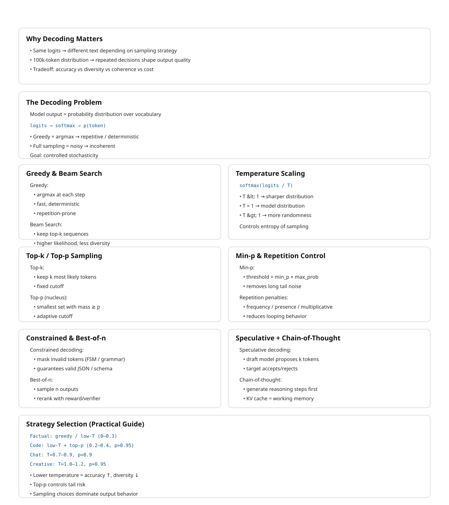

10 Decoding and Sampling
The canonical question for this chapter: The model produces a probability distribution over 100,000 tokens. How do you turn that distribution into the actual text the user sees, and how does that choice shape everything from creativity to factuality to cost?
10.1 The decoding problem
After the transformer forward pass, the output is a vector of logits one score per token in the vocabulary. Applying softmax converts these to a probability distribution:
logits: [2.3, -1.2, 0.8, 4.1, -0.3, ...] shape: [vocab_size]
probabilities: [0.04, 0.001, 0.01, 0.33, 0.004, ...] shape: [vocab_size]The highest-probability token is not always the right choice. Selecting it every time known as greedy decoding produces text that is repetitive, overconfident, and often worse than sampling from the distribution. Nevertheless sampling randomly from the full distribution produces incoherent text that assigns probability to every token, including terrible ones.
Decoding is the set of strategies for navigating this tradeoff: selecting a token (or sequence of tokens) from the distribution in a way that produces output that is coherent, diverse, and appropriate for the task. It runs once per generated token, which for a 500 token response means it runs 500 times. Small differences in strategy compound into large differences in output.
10.2 Greedy decoding
The simplest strategy: always select the token with the highest probability.
def greedy_decode(logits):
return logits.argmax(dim=-1)Greedy decoding is deterministic the same prompt always produces the same output. It is fast (no sampling required) and produces coherent local choices at each step.
The problem: local optimality does not imply the global optimality. The highest- probability token at step t may lead to a sequence that is less probable overall than a sequence that takes a lower probability token at step t and recovers. As a result, greedy decoding can become trapped in a local optimum.
The most visible symptom is repetition. Once a model enters a repetitive pattern, greedy decoding has no escape mechanism, the most likely next token at each step continues the pattern. The model knows, in some sense, that it is repeating itself (it assigns lower probability to the repetition than to alternatives), but greedy decoding ignores that signal and repeats anyway.
Greedy decoding is appropriate for tasks with a single correct answer (extracting specific information, classification, structured output generation where diversity is undesirable) and for debugging, where the deterministic output makes it easier to isolate model behavior from sampling noise.
10.3 Beam search
Beam search maintains a set of k candidate sequences and extends all of them at each step, keeping only the k most probable overall:
Beam width k=2, step 1:
Candidates: ["The cat", "A dog"]
Scores: [log P("The") + log P("cat"|"The"),
log P("A") + log P("dog"|"A")]
Step 2: extend each candidate:
"The cat sat", "The cat ran", "The cat is", ... (vocab_size options)
"A dog ran", "A dog sat", "A dog is", ... (vocab_size options)
Keep top k=2 by cumulative log probability:
["The cat sat", "A dog ran"]At the end of generation, the candidate with the highest cumulative log probability is returned. Beam search finds sequences with higher overall probability than greedy decoding because it can recover from locally suboptimal choices.
10.3.1 The beam search curse
Beam search dominated sequence-to-sequence tasks (translation, summarization) from roughly 2015 to 2020. For tasks with constrained output spaces, it performs well. For open-ended generation, it has a well-documented failure mode: it produces output that is generic and boring.
High-probability sequences tend to be safe, common phrases. The beam converges to the statistical mean of training data rather than producing specific, vivid text. This is the beam search curse: the sequences with highest probability under the model are not the sequences humans prefer. Human language is not the highest- probability sequence, people regularly choose moderately probable, interesting words over the most probable, expected ones.
Beam search is still used for translation (k=4 is typical), structured data extraction, and code generation with hard constraints. For conversational and creative generation, sampling-based methods have largely replaced it.
10.4 Temperature sampling
Temperature is one of the most important hyperparameters in decoding. It adjusts the probability distribution over the next token before sampling, making the distribution either sharper or flatter.
10.4.1 The temperature transformation
Before sampling, the logits are divided by a temperature parameter (T):
adjusted_probs = softmax(logits / T)T < 1.0 (cold): the distribution become sharper and high-probability tokens receive relatively more probability mass, while low-probability tokens receive less. At T → 0, the distribution approaches a point mass on the highest-probability token. Consequently, stochastic sampling becomes deterministic, recovering the behavior of greedy decoding.
T = 1.0: the distribution is unchanged from the model’s output.
T > 1.0 (hot): the distribution becomes flatter and probabilities are spread more evenly across tokens. At T → ∞, the distribution becomes uniform.
Logits: [4.0, 2.0, 1.0, 0.5]
T=0.5 (cold): softmax([8.0, 4.0, 2.0, 1.0]) → [0.86, 0.12, 0.02, 0.01]
T=1.0 (normal): softmax([4.0, 2.0, 1.0, 0.5]) → [0.68, 0.17, 0.08, 0.07]
T=2.0 (hot): softmax([2.0, 1.0, 0.5, 0.25])→ [0.45, 0.27, 0.16, 0.12]10.4.2 Choosing temperature
T = 0 (greedy): factual retrieval, classification, structured output. Maximizes accuracy for tasks with correct answers.
T = 0.1–0.4: code generation, factual Q&A, tasks where accuracy matters but some flexibility is useful. Concentrated distribution that rarely samples improbable tokens.
T = 0.7–1.0: conversational responses, general-purpose assistants. Balanced diversity and coherence. Most production systems operate in this range.
T = 1.0–1.4: creative writing, brainstorming, poetry. Higher diversity, more surprising choices. Coherence may occasionally suffer.
T > 1.5: experimental. Useful for exploring the model’s probability space, not for production output.
Temperature is not a global constant and it should vary by task. A system that writes creative fiction and also answers factual questions should use different temperatures for each, ideally set automatically based on query classification.
10.5 Top-k sampling
Temperature sampling from the full distribution can still sample very unlikely tokens. If there are 100,000 tokens in the vocabulary, even after temperature adjustment there may be thousands of tokens with non-negligible probability, including tokens that produce incoherent output.
Top-k sampling restricts sampling to the k most probable tokens:
def top_k_sample(logits, k, temperature=1.0):
logits = logits / temperature
top_k_values, top_k_indices = torch.topk(logits, k)
filtered_logits = torch.full_like(logits, float('-inf'))
filtered_logits.scatter_(0, top_k_indices, top_k_values)
probs = torch.softmax(filtered_logits, dim=-1)
return torch.multinomial(probs, num_samples=1)The remaining probability mass is renormalized across the top-k tokens before sampling. Tokens outside the top-k are masked with -inf, giving them zero probability after softmax.
Top-k has a structural limitation: k is fixed regardless of the distribution shape. When the model is very confident (one token at probability 0.95, the rest near zero) top-k=50 forces sampling from 50 tokens when 49 of them are clearly wrong choices. When the model is genuinely uncertain (500 tokens each at probability ~0.002) top-k=50 discards 450 plausible options. A fixed k handles neither scenario well. This motivates nucleus sampling.
10.6 Nucleus (top-p) sampling
Nucleus sampling adapts the number of candidates to the distribution shape. Instead of a fixed count k, it takes the smallest set of tokens whose cumulative probability exceeds p:
def nucleus_sample(logits, p, temperature=1.0):
logits = logits / temperature
probs = torch.softmax(logits, dim=-1)
sorted_probs, sorted_indices = torch.sort(probs, descending=True)
cumulative_probs = torch.cumsum(sorted_probs, dim=-1)
sorted_indices_to_remove = cumulative_probs - sorted_probs > p
sorted_probs[sorted_indices_to_remove] = 0
sorted_probs /= sorted_probs.sum()
sampled_index = torch.multinomial(sorted_probs, num_samples=1)
return sorted_indices[sampled_index]With p = 0.9: include the fewest tokens whose probabilities sum to at least 0.9. Renormalize and sample from those tokens only.
When the model is confident (one token at 0.95 probability), the nucleus contains only that token which is effectively greedy decoding. When the model is uncertain (probability spread widely), the nucleus includes many tokens and sampling is diverse. The nucleus size adapts to the situation rather than being fixed in advance which makes it ideal for production.
10.6.1 Choosing p
p = 0.9–0.95: the most common range. Excludes the long tail of implausible tokens while preserving diversity for plausible choices.
p = 1.0: sample from the full distribution there aren’t any nucleus restriction. Equivalent to pure temperature sampling.
p = 0.5: very concentrated. Appropriate for high-accuracy tasks but risks becoming too deterministic.
Top-p and temperature are typically used together. Temperature shapes the distribution; top-p determines the cutoff. A common production configuration: temperature=0.7, top_p=0.9.
10.7 Min-p sampling
A more recent alternative to top-p that addresses a subtle failure mode.
Top-p’s cutoff is cumulative: if the nucleus already covers 90% of probability mass, tokens beyond that are excluded regardless of their absolute probability. In practice, this can include tokens with very low absolute probability if they accumulate to push the total past p, especially when the distribution is flat.
Min-p sets a minimum absolute probability threshold instead: only sample from tokens whose probability exceeds min_p × max_token_probability.
def min_p_sample(logits, min_p, temperature=1.0):
probs = torch.softmax(logits / temperature, dim=-1)
max_prob = probs.max()
threshold = min_p * max_prob
filtered_probs = probs.clone()
filtered_probs[probs < threshold] = 0
filtered_probs /= filtered_probs.sum()
return torch.multinomial(filtered_probs, num_samples=1)With min_p = 0.05: if the most likely token has probability 0.4, only tokens with probability \(\geq\) 0.02 are considered. If the most likely token has probability 0.9, the threshold rises to 0.045 automatically restricting sampling when the model is confident.
Min-p adapts to distribution shape like top-p but uses the maximum token probability as the reference rather than the cumulative sum. Empirically, it produces more coherent output than top-p for creative tasks while maintaining diversity.
10.8 Repetition penalties
A common failure mode of sampling is that the model becomes trapped in repetitive loops. This issue is not solely caused by the decoding algorithm, it often reflects the model operating in a low-quality mode or producing a poorly calibrated probability distribution. Nevertheless, appropriate decoding strategies can help mitigate this problem.
10.8.1 Frequency penalty
Reduces the logit of any token proportional to how many times it has appeared in the generated output so far:
adjusted_logit[t] = logit[t] - frequency_penalty × count(t, generated_so_far)A token that has appeared 5 times with frequency_penalty = 0.5 has its logit reduced by 2.5. Frequently used tokens become progressively less likely.
10.8.2 Presence penalty
Reduces the logit of any token that has appeared at all, by a flat amount:
adjusted_logit[t] = logit[t] - presence_penalty × (1 if t in generated_so_far else 0)Unlike frequency penalty, presence penalty does not scale with count, it applies a flat reduction on first appearance and no additional reduction after that. It discourages reusing any token at all, not repeatedly using a token many times.
10.8.3 Repetition penalty (multiplicative)
Used in HuggingFace and most open-source implementations:
adjusted_logit[t] = logit[t] / repetition_penalty if logit[t] > 0
adjusted_logit[t] = logit[t] × repetition_penalty if logit[t] < 0For repetition_penalty > 1.0, this divides positive logits and multiplies negative logits, making previously generated tokens less likely regardless of their sign.
10.8.4 Practical considerations
Repetition penalties must be carefully calibrated. If the penalty is too strong, the model may avoid repeating necessary words, including common function words such as the, is, and and, which naturally occur multiple times in fluent text. Conversely, if the penalty is too weak, repetitive outputs may persist.
Most production systems apply penalties only to the generated portion, not the prompt, you do not want tokens appearing in the prompt to be penalized in the response. Context window position also matters: penalizing tokens from many turns ago that have no relationship to the current generation is rarely useful.
10.9 Structured decoding and constrained generation
For many production use cases, the output must conform to a specific format ( a valid JSON, a Python function, a response matching, a defined schema). Unconstrained sampling may produce syntactically invalid output, requiring expensive retry loops. Structured decoding guarantees valid output by constraining the logits at each step.
10.9.1 How constrained generation works
At each decoding step, a parser tracks the current state of the partially generated output and computes the set of tokens that are valid at this position, tokens that would not cause the output to become unparseable. All invalid tokens are masked out (their logits set to -inf) before sampling.
Target format: JSON object with "name" (string) and "age" (integer)
After generating: {"name": "
Valid next tokens: any character that could appear in a JSON string
Invalid next tokens: }, ], :, numbers, structural tokens
After generating: {"name": "Alice", "age":
Valid next tokens: digits (0–9), negative sign
Invalid next tokens: letters, quotes, bracesThe parser can be regex-based (valid tokens match the regex at the current position), grammar-based (tokens permitted by a context-free grammar at the current parse state), or schema-based (tokens consistent with a JSON schema or Pydantic model).
10.9.2 Implementations
Outlines (Willard & Louf, 2023): builds a finite state machine from the schema or regex at compile time. At inference, the FSM advances after each token and the valid next-token set is read from the FSM in O(1). The precomputed FSM makes constraint checking negligible overhead.
Guidance (Microsoft): the earlier widely-used structured generation library. Intercepts the generation loop and applies constraints at each step with a broader feature set including branching and conditional generation.
llama.cpp GBNF grammars: built-in grammar-based constrained generation using a BNF-like notation. Ships with llama.cpp without additional dependencies.
10.9.3 Overhead
Constrained generation adds overhead in logit masking (computing the valid token set and applying the mask which is O(1) per step with precomputed FSMs) and in reduced sampling diversity (smaller effective vocabulary). Latency overhead is typically 5–15% relative to unconstrained generation with FSM-based approaches. The alternative (parsing failures and retry loops) is far more expensive.
10.10 Best-of-n sampling
Generate n independent completions for the same prompt and select the best one according to some criterion:
Generate n=8 completions for the same prompt
Score each:
- Reward model score (human preference prediction)
- Verifier (run the code, check the math)
- Self-consistency (most common answer across completions)
- Model perplexity (model's own confidence in its output)
Return the highest-scoring completionBest-of-n is a simple yet effective strategy for improving output quality by allocating additional computation during inference. The model generates n candidate outputs and selects the best one according to a scoring criterion. Performance typically scales log-linearly with n: increasing the number of samples from 1 to 4 often yields substantial improvements, whereas increasing it from 8 to 16 provides smaller, diminishing gains.
Verifiable tasks are where best-of-n works best. For math problems, the answer can be verified for correctness. For code, it can be executed and tested. Generate n solutions, keep those that pass verification, return the best or majority-vote answer.
Reward model reranking generates n responses and scores them with a reward model trained to predict human preference, effectively the RLHF reward signal applied at inference time rather than training time.
Self-consistency (Wang et al., 2023) generates n answers with chain-of- thought, returns the most common final answer. This improves accuracy on multi- step reasoning tasks significantly without requiring a separate verifier.
10.11 Speculative sampling
Autoregressive generation has an uncomfortable property: producing token 50 requires having already produced tokens 1 through 49, one at a time, each requiring a full forward pass through the model.
Speculative decoding is a way to avoid paying that tax token-by-token. A small, cheap draft model runs ahead and proposes a candidate sequence of k tokens. The target model then evaluates all k candidates in a single forward pass. The target model isn’t generating here; it’s grading a draft that’s already been written.
Drafting versus grading raises the obvious question: how does the target model decide which of the draft’s guesses to keep? The naive answer is a threshold: keep what the target model agrees with and discard the rest. This naive answer is wrong, and understanding why it’s wrong is the key to understanding the whole algorithm.
10.11.1 The acceptance rule
For each draft token x_t, accept it with probability:
P(accept x_t) = min(1, p_target(x_t) / p_draft(x_t))Two regimes:
- The target model likes the token at least as much as the draft did (\(p_{target} \geq p_{draft}\)): accept with probability 1.
- The target model likes it less (\(p_{target} < p_{draft}\)): accept only with probability \(p_{target} / p_{draft}\). The draft model was, in effect, overconfident relative to the target, so the token survives only in proportion to how much the target actually endorses it.
10.11.2 What happens on rejection and why the obvious fix is wrong
Suppose a draft token is rejected. The intuitive move is to sample a replacement directly from p_target at that position after all, the target model already computed that full distribution during verification. This turns out to distort the final output, and a small numeric example makes the distortion concrete.
Take a two-token vocabulary, {A, B}, where:
p_target(A) = 0.5, p_target(B) = 0.5
p_draft(A) = 0.9, p_draft(B) = 0.1The draft model samples from its own distribution, so it proposes A 90% of the time. When it does, the acceptance probability is min(1, 0.5/0.9) = 0.556. If we reject and then naively resample straight from p_target:
P(final = A) = P(draft=A)·P(accept) + P(draft=A)·P(reject)·P(naive resample = A)
= 0.9 × 0.556 + 0.9 × 0.444 × 0.5
= 0.5 + 0.2 = 0.7The final probability of A comes out to 0.7, even though the target model only wanted A 50% of the time. Token A is getting double-counted: it wins a first chance through acceptance, and then (because a naive resample doesn’t know that) a second, independent chance through rejection. Any token the draft model over-favored relative to the target ends up over-represented in the output. This is precisely the kind of quality drift speculative decoding is supposed to avoid.
10.11.3 The residual distribution
The fix is to correct only into the probability mass that acceptance hasn’t already claimed:
p_correction(x) = max(0, p_target(x) - p_draft(x)) / ZThis is not the target’s raw distribution, it is the target’s distribution with the draft’s contribution subtracted out, clipped at zero, and renormalized by Z. Any token the draft over-proposed is zeroed out here, since it already had its fair shot via acceptance and cannot be picked a second time. Any token the draft under-proposed keeps some mass, since that’s the only place where the target’s true preference hasn’t yet been accounted for.
Reworking the example: p_correction(A) = max(0, 0.5 − 0.9) = 0, so A can never be selected on correction. p_correction(B) = max(0, 0.5 − 0.1) = 0.4, and since it’s the only token with nonzero mass, Z = 0.4 and correction always yields B. Recomputing:
P(final = A) = 0.9 × 0.556 = 0.5 matches p_target(A)
P(final = B) = 0.1 × 1 (direct accept) + 0.9 × 0.444 × 1 (correction) = 0.1 + 0.4 = 0.5 matches p_target(B)Both tokens land exactly on the target’s true probabilities.
10.11.4 Walking through a full sequence
The acceptance/correction step happens per position, scanned left to right, and stops at the first rejection. Suppose the draft model proposes five tokens continuing “The cat sat on the”:
Draft sequence: x1="mat" x2="and" x3="looked" x4="very" x5="happy"One target-model forward pass over the prompt plus all five draft tokens yields the target’s distribution at every position simultaneously, thanks to causal masking position 1 conditioned only on the real prompt, position 2 on the real prompt plus x1, and so on.
Position 1: x1="mat" p_draft=0.7, p_target=0.8 → accept (prob. 1)
Position 2: x2="and" p_draft=0.5, p_target=0.5 → accept (prob. 1)
Position 3: x3="looked" p_draft=0.6, p_target=0.2 → accept w.p. 0.33 → suppose REJECTEDOnce position 3 is rejected, positions 4 and 5 are discarded without ever being checked x4 and x5 were drafted under the assumption that “looked” was the accepted prefix, and that assumption no longer holds. Position 3 is then resolved by drawing from the residual distribution at that position, which excludes “looked” (already rejected) and favors whatever the target under-weighted relative to the draft say this yields “leapt.”
Accepted this round: "mat", "and", "leapt"
Discarded: "looked", "very", "happy"Three tokens survive from five drafted, produced by a single target forward pass rather than three sequential ones. The next round starts fresh: the draft model proposes another k tokens continuing from “…sat on the mat and leapt,” and the cycle repeats.
10.12 Chain-of-thought and reasoning tokens
A decoding-time technique that improves performance on reasoning tasks: before producing the final answer, the model generates intermediate reasoning steps.
Without chain-of-thought:
Q: "If a train travels 120 miles in 2 hours, what is its speed?"
A: "60 miles per hour."
With chain-of-thought:
Q: "If a train travels 120 miles in 2 hours, what is its speed?"
A: "To find speed, I divide distance by time.
Speed = 120 miles / 2 hours = 60 miles per hour."Chain-of-thought is a decoding strategy in that it requires generating more tokens before reaching the answer. The intermediate tokens are not just scaffolding, they change the probability distribution over the final answer. When the model writes out an intermediate calculation, that calculation is encoded into the KV cache. Subsequent tokens attend to it. The final answer is generated with the full reasoning chain as context, information that was not available at the first token.
This is in-context computation: the model uses its own generated text as working memory, offloading complex reasoning to the sequence rather than encoding it entirely within the forward pass. The context window is not just for input but also it is the model’s scratch pad.
10.13 Decoding strategy selection guide
A practical reference for choosing decoding parameters by task:
| Task | Strategy | Temperature | Top-p | Notes |
|---|---|---|---|---|
| Factual Q&A | Greedy or low-T | 0–0.3 | 1.0 | Consistency over diversity |
| Code generation | Low temperature | 0.2–0.4 | 0.95 | Correctness matters; some diversity for alternatives |
| JSON / structured output | Constrained | 0.0–0.3 | — | Use constrained decoding; redundant with high-T |
| Translation | Beam or low-T | 0.1–0.3 | — | Beam k=4 or low-T sampling |
| Summarization | Low-medium | 0.3–0.6 | 0.9 | Some diversity; avoid repetition penalties for common words |
| Conversation | Medium | 0.7–0.9 | 0.9 | Naturalness and variety |
| Creative writing | High | 0.9–1.2 | 0.95 | Maximize diversity; consider min-p |
| Reasoning / math | Very low or CoT | 0.0–0.1 | — | Greedy for extraction; chain-of-thought for reasoning |
| Brainstorming | High | 1.0–1.4 | 0.95 | Divergent thinking; coherence secondary |
10.14 Key takeaways
- The model outputs a probability distribution over the vocabulary at each step; decoding selects a token from that distribution — this choice, made thousands of times, determines the character of the output
- Greedy decoding (always pick the most probable token) is deterministic and accurate for factual tasks but produces repetitive, generic output for open- ended generation because local optimality does not imply global optimality
- Beam search maintains
kcandidate sequences and returns the highest cumulative probability sequence; better than greedy for constrained tasks but suffers the beam search curse for open-ended generation — highest-probability ≠ most interesting - Temperature scales logits before softmax: below 1.0 sharpens the distribution (more deterministic), above 1.0 flattens it (more random); vary temperature by task rather than using a single global value
- Top-p (nucleus sampling) adaptively samples from the smallest token set covering probability mass
p— the nucleus shrinks when the model is confident, expands when uncertain; it is the dominant production sampling strategy - Min-p uses the maximum token probability as a reference threshold rather than cumulative mass, producing more coherent output in cases where top-p includes low-probability tokens
- Structured decoding masks invalid tokens at each step using FSMs or parsers, guaranteeing format correctness with ~5–15% overhead — far cheaper than retry loops
- Best-of-n generates multiple completions and selects the best; most effective for verifiable tasks (math, code) where correctness can be checked programmatically
- Chain-of-thought uses the KV cache as working memory — intermediate reasoning tokens change the probability distribution over the final answer; reasoning models extend this to thousands of deliberation tokens
- Higher temperature increases hallucination rate; factual and structured tasks should use low temperature or constrained decoding to respect the model’s already-correct probability signal

10.15 Further reading
- Holtzman et al. (2020). The Curious Case of Neural Text Degeneration. — Established why greedy and beam search fail for open-ended generation and introduced nucleus sampling. The analysis of probability maximization failure modes is essential.
- Fan et al. (2018). Hierarchical Neural Story Generation. — Introduced top-k sampling for neural text generation; the original motivation and evaluation.
- Leviathan et al. (2023). Fast Inference from Transformers via Speculative Decoding. — Speculative sampling with exact distribution preservation; the proof that the correction step maintains the target distribution is the key contribution.
- Wei et al. (2022). Chain-of-Thought Prompting Elicits Reasoning in Large Language Models. — Established chain-of-thought as a decoding-time technique.
- Willard & Louf (2023). Efficient Guided Generation for Large Language Models. — The Outlines paper; FSM-based constrained decoding with O(1) per-step overhead.